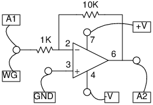

Schematic

Instructions
- Use the Oscilloscope to test the Inverting Amplifier.
- Enable A1, A2 and their analysis option
- Set WG amplitude to 100 mV.
- Set the range of A1 to 0.5 V and range of A2 to 4V.
- Monitor the traces.
- Change the gain by changing one of the resistors. Gain = -Rf/Ri